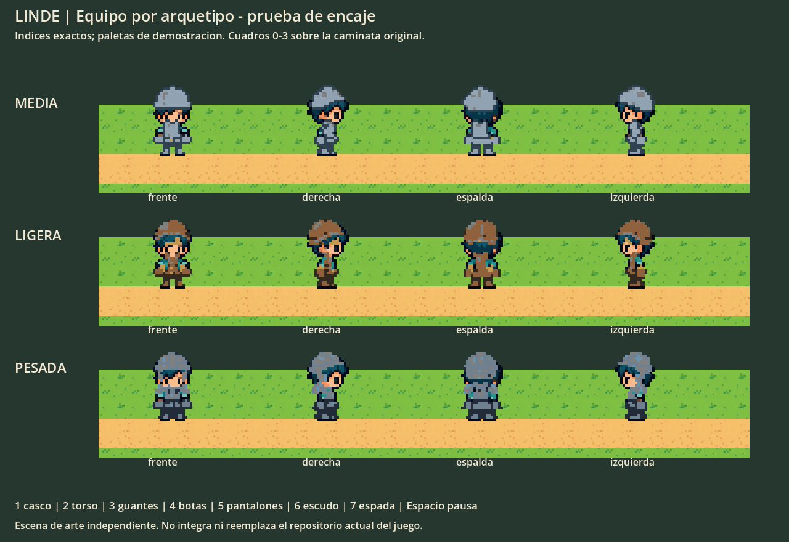

17/17 hojas: cero errores y cero avisos en el validador original. Esto no certifica acabado artístico, fluidez ni integración con el juego actual.
Prueba de combinación y recoloreado
Izquierda: caminata original. Derecha: misma base con las piezas seleccionadas. Las paletas son ejemplos técnicos, no familias de equipo aprobadas. Las prendas base permanecen como ropa interior en esta prueba; ocultación y capas de manos deben conectarse en el juego.
Encaje sobre terreno en Godot

Escena independiente para revisar proporciones. No es una captura del repositorio vigente del juego.
Las 17 hojas originales
Estos son los PNG de entrega, sin los colores de demostración. Cada enlace de informe corresponde a una ejecución del validador original.
Reutilización
Casco y torso medios, espada y escudo proceden de los recursos anteriores. Guantes, botas y pantalones se derivan de los píxeles y movimientos existentes. Ligera y pesada añaden diferencias de casco y torso. Algunas piezas de distintos arquetipos comparten píxeles deliberadamente.
Auditoría independiente